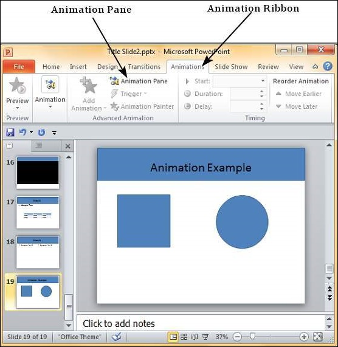
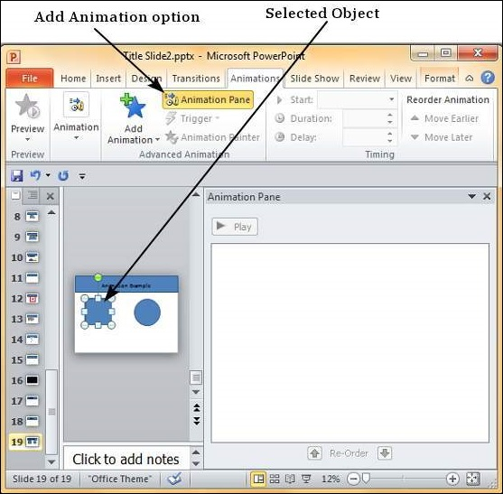
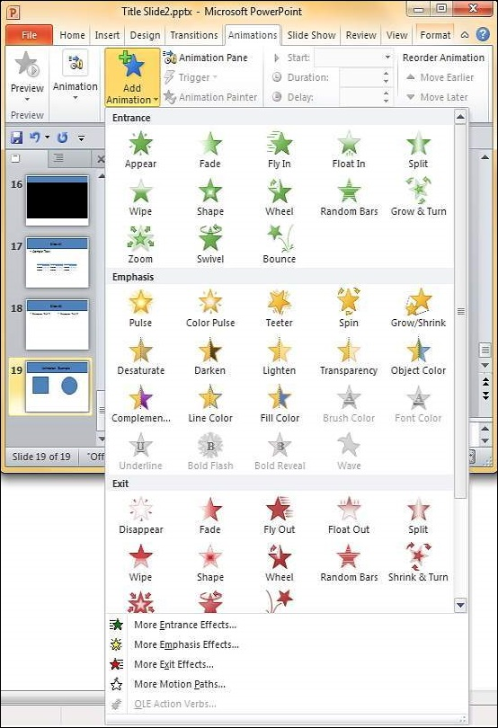
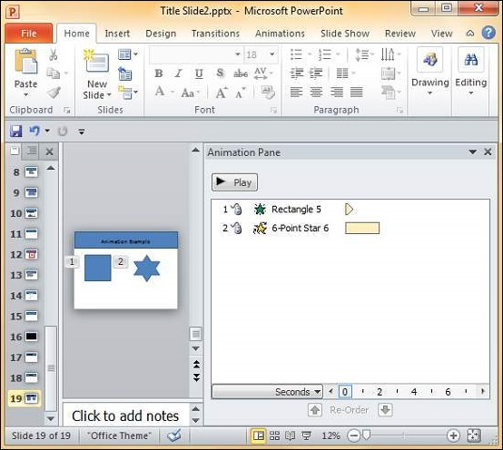
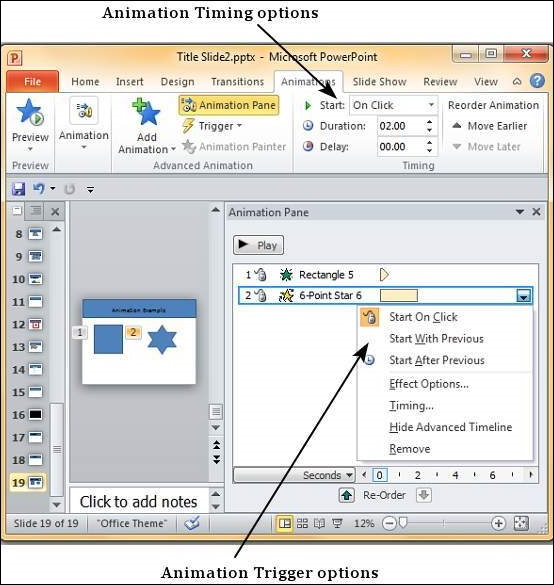
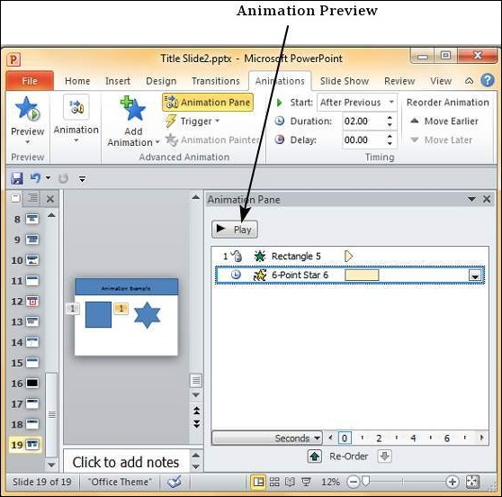

PowerPoint offers animation support which can be used effectively to add some motion in a monotonous presentation and make it more interesting. Animation can be applied to any object on the slide and the motions can the automated, timed or trigger.
The following steps will help you add and preview animations in the slide.
Step 1 − Go to the Animation ribbon and click on the Animation Pane to display the animation sidebar.

Step 2 − Select one of the objects in the slide and click on the Add Animation menu option.

Step 3 − Choose from one of the Animation options.

Entrance will cause the object to appear in the screen.
Emphasis will cause the object to emphasis without appearing or leaving the screen.
Exit will cause the object to disappear from the screen.
Step 4 − Once you add the animation for an object, it will show up in the Animation pane.

Step 5 − By default, all the animations are initiated by a click, but you can change this. To change the trigger, right-click on the animation object on the pane and choose an alternate trigger.

Start On Click will cause the animation to start when you click the mouse.
Start With Previous will cause the animation to begin with the previous animation; if this is the first object, it will begin as soon as you reach the slide during the slide show.
Start After Previous will cause the animation to begin after the previous animation ends.
Step 6 − From the timing section, you can also manipulate the animation timings.
Step 7 − To preview the animation settings, just click Play on the animation pane.
